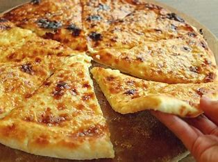
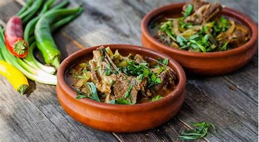
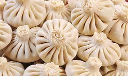
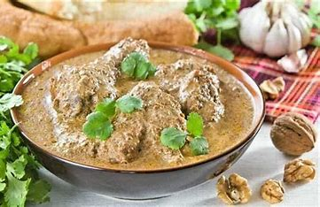
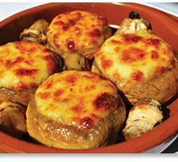

| Название блюда | Оценка блюда | Ссылка на рецепт | Фото блюда |
|---|---|---|---|
| Хачапури | 10 | рецепт хачапури |  |
| Чакапули из баранины | 10 | рецепт чакапули |  |
| Хинкали | 10 | рецепт хинкали |  |
| Сациви | 10 | рецепт сациви |  |
| Шампиньоны с сулугуни - соко кецзе | 10 | рецепт шампиньонов |  |